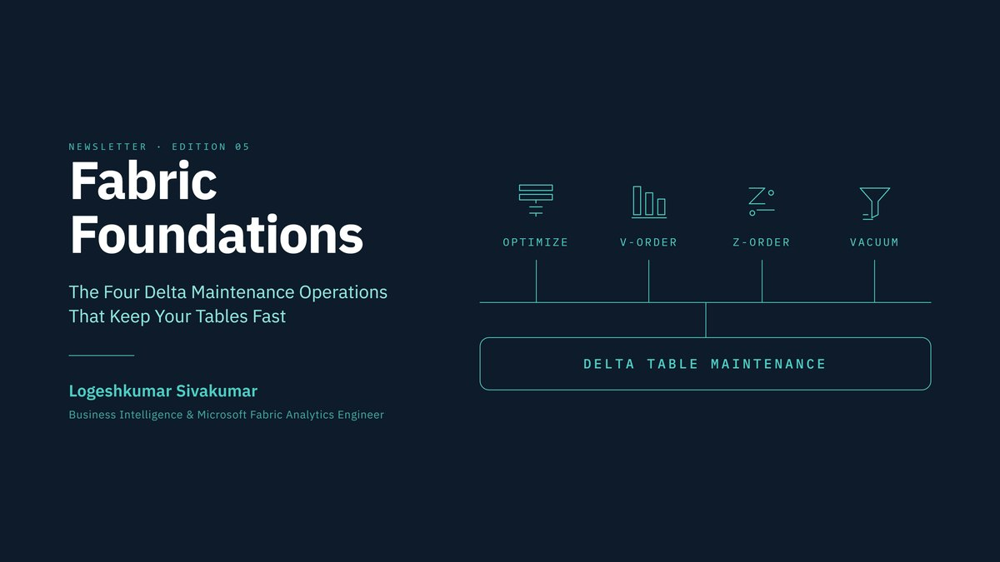
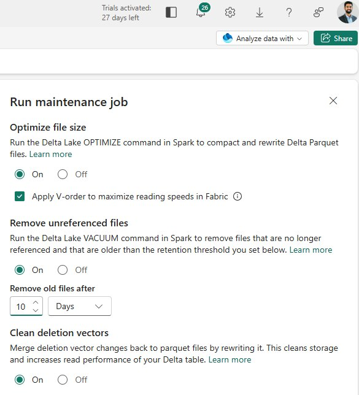

The Four Delta Maintenance Operations That Separate Building a Pipeline from Running One
Logeshkumar Sivakumar · September 9, 2026 · 5 min read

A report that flew last month crawls today. Nothing upstream changed, the query is the same, yet every refresh drags. Most Microsoft Fabric practitioners hit this and start rewriting the query or blaming the capacity, when the cause is almost always physical: the Delta table quietly filled with small files, or nobody ever ran maintenance on it.
That is the line between someone who can build a pipeline and someone who can run one in production. This is the Microsoft Fabric Delta table maintenance toolkit, and four operations are worth knowing cold: OPTIMIZE, V-Order, Z-Order, and VACUUM.
Why does a Delta table get slower over time?
Delta never edits a Parquet file in place. Every write lands new files and marks the old ones obsolete. Streaming micro-batches and frequent small appends make that worse fast, and you end up with thousands of tiny files. Reads then pay for it, because the engine opens every file, reads every footer, and loses the efficiency of a large scan. That is the small-files problem.
What OPTIMIZE does and when to run it
OPTIMIZE is the fix. OPTIMIZE is a Spark SQL command that rewrites many small Parquet files into fewer larger ones, without changing your data, only its physical layout. Target file size sits in the hundreds of MB up to roughly 1 GB, though verify the current default before quoting it.
%%sql
OPTIMIZE gold_region_category;Run it after heavy ingestion, or when DESCRIBE DETAIL shows the file count climbing. One caveat that trips people up: OPTIMIZE is a Spark operation, so you cannot run it from the read-only SQL analytics endpoint or the Warehouse editor. The file count before versus after is the whole point in a single number.
What is V-Order, and what does it cost?
V-Order is a Fabric write-time optimization that reorganises the Parquet layout, its sorting, encoding, and compression, so downstream reads are faster across Fabric engines while the files stay open-source Parquet compliant. The catch is the write. You pay roughly 15% slower writes on average in exchange for better compression and faster reads. I am not fully certain of the exact percentages, so treat these as approximate.
Who it helps decides whether you turn it on. Power BI Direct Lake sees large read gains on cold-cache queries. A read-heavy SQL endpoint or Warehouse sees a smaller lift, roughly 10%. Spark gets no read benefit and just eats the slower write, so skip V-Order on Spark-only, write-heavy staging tables. Enable it for Direct Lake, skip it for staging.
How is Z-Order different from V-Order?
They answer different questions. Z-Order clusters rows that share values in the columns you choose so they land in the same files, which improves data skipping for queries that filter on those columns. You apply Z-Order inside OPTIMIZE, and you can stack it with V-Order in one command.
%%sql
OPTIMIZE sales WHERE order_date >= '2026-01-01'
ZORDER BY (customer_id) VORDER;Use V-Order broadly for cross-engine reads. Use Z-Order narrowly, on the one or two high-cardinality columns your queries actually filter by. Do not Z-Order by a long list of columns, because effectiveness drops off fast as you add more.
The VACUUM rule that breaks Direct Lake reports
Because Delta keeps old files for time travel, storage grows, and VACUUM reclaims it. VACUUM removes data files no longer referenced by the current table that are older than a retention threshold, defaulting to 7 days.
Here is the part that costs people an afternoon. Set retention below 7 days and you can break time travel, and worse, break a Direct Lake semantic model that references a specific committed version. VACUUM deletes the Parquet files that model still points to, and the report starts erroring because the files are gone. Fabric rejects sub-7-day retention by default for exactly this reason. Run VACUUM after your compaction cycles, keep the default window, and only override it if you fully understand the consequence.
Why an update runs fast, then OPTIMIZE cleans up
Deletes and updates used to be expensive for the same reason: removing a few rows meant rewriting the whole file they lived in. Deletion vectors change that. A deletion vector marks rows as deleted without rewriting the file, a merge-on-read optimization, so the change commits fast. The rows are still physically there; Delta just carries a note to ignore them on read. A later OPTIMIZE physically removes them and rewrites the file clean. You do not manage deletion vectors by hand. Knowing the mechanism is enough: it explains both the fast update and why OPTIMIZE tidies up afterwards.

How do you run all of this on a schedule?
Three ways, mapping to how much control you want. Ad hoc: right-click a table in the Lakehouse, choose Maintenance, and run OPTIMIZE (with optional V-Order) and VACUUM from the UI. In code: put OPTIMIZE and VACUUM in a notebook or Spark job definition, alongside your other transformation steps. Scheduled: the Lakehouse Maintenance activity inside a Data Factory pipeline, chained after your load steps so maintenance runs on a cadence right after ingestion.
The pattern that holds up: load, then OPTIMIZE, then VACUUM on a weekly cadence, all in one pipeline. So the next time a table crawls, do not rewrite the query first. Run DESCRIBE DETAIL, look at the file count, and you will usually have your answer before you have finished reading the log.
Previous in this series: What Your Delta Tables Actually Are: Parquet Internals and the Transaction Log in Microsoft Fabric
Next in this series:
References:
- Delta Lake table optimization and V-Order (Microsoft Fabric) - learn.microsoft.com
- Run Delta Lake table maintenance in the Fabric Lakehouse - learn.microsoft.com
- Use table maintenance to manage Delta tables in Microsoft Fabric - learn.microsoft.com
#DeltaLake #VOrder #ZOrder #MicrosoftFabric #DataEngineering #Lakehouse #DirectLake #PowerBI